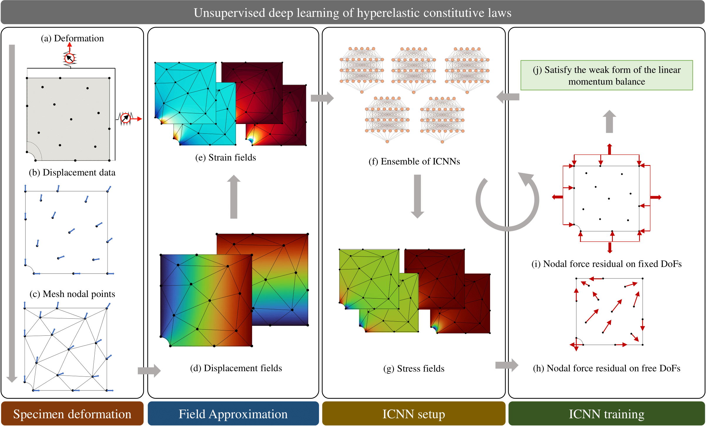

NN-EUCLID Readme
EUCLID stands for Efficient Unsupervised Constitutive Law Identification and Discovery. Visit the project website to learn more. Within the scope of this project we developed NN-EUCLID:
NN-EUCLID is a deep-learning based framework to learn hidden material models using full-field displacement and global reaction force measurements. Below we give an overview of the framework: (a,b) Point-wise displacements and reaction forces are recorded for a hyperelastic specimen under quasi-static deformation. Using the point-wise displacements and a finite element mesh of the domain (c), continuous displacement and strain fields are obtained (d,e). An ensemble of physics-consistent ICNN-based constitutive models (f) map the strain fields to stress fields (evaluated at the quadrature point of each element) (g). The stress fields are used to compute the internal and external nodal forces (h,i). Based on the weak form of the conservation of linear momentum, the residual forces are minimized (j) — point-wise for the free degrees of freedom (h) and aggregated for the fixed degrees of freedom (under each set of Dirichlet constraint with a measured reaction force) (i). The optimization is carried out iteratively to train the parameters of the ICNN-based constitutive models (f).

The documentation consists of a file-wise explanation of the code. The code and the Finite Element data used to generate the results shown in the NN-EUCLID paper are available in the GitHub repository.